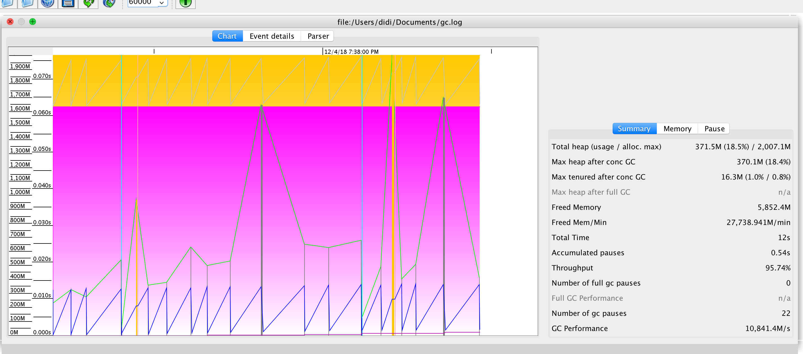
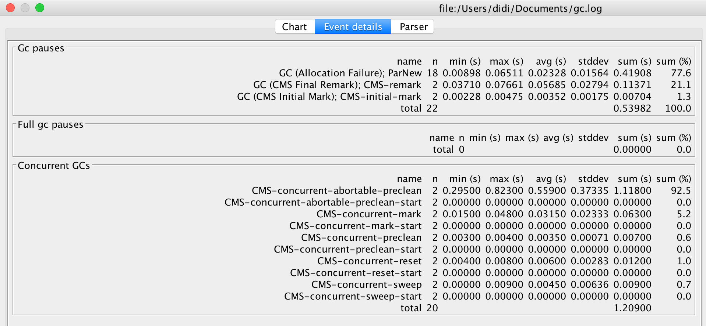

Java的GC查看工具-GCVIEWER
gcviews安装和使用
源码安装
1 | git clone https://github.com/chewiebug/GCViewer.git |
JVM开启gclog
java的启动命令增加 -Xloggc:./gc.log参数下面是我的一个实例
1 | java -jar -verbose:gc -XX:+PrintGCDetails -XX:+PrintGCTimeStamps -Xloggc:./gc.log xxx.jar |
启动
指定上面的gc.log的目录
java -jar gcviewer-1.36-SNAPSHOT.jar ./gc.log
会看到如下的图表
Chart的说明
view能看到各GC的情况，右边是一些说明信息，summary查看具体的描述信息

EventDetail标识具体的GC的事件信息
